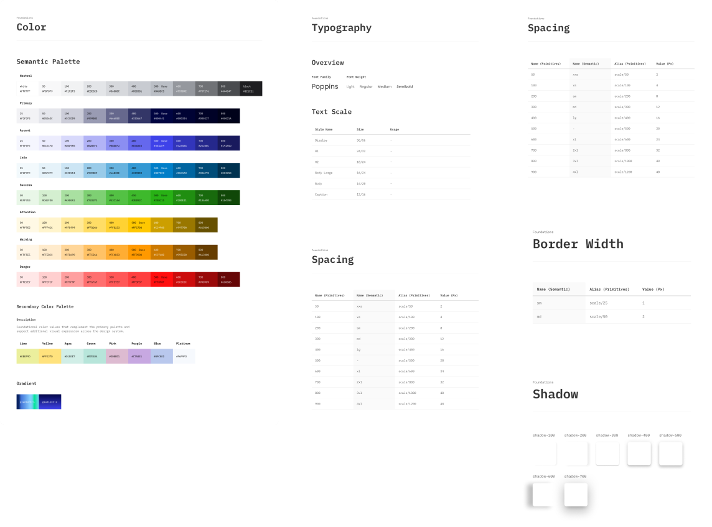
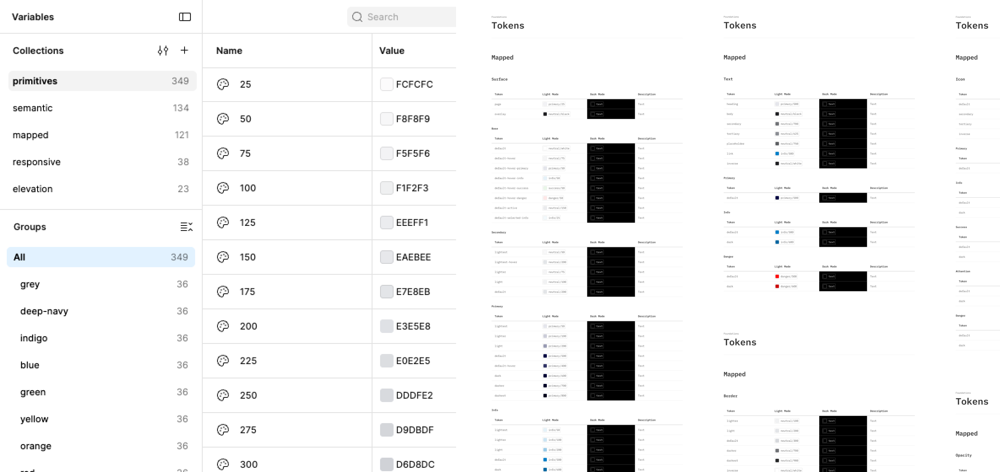
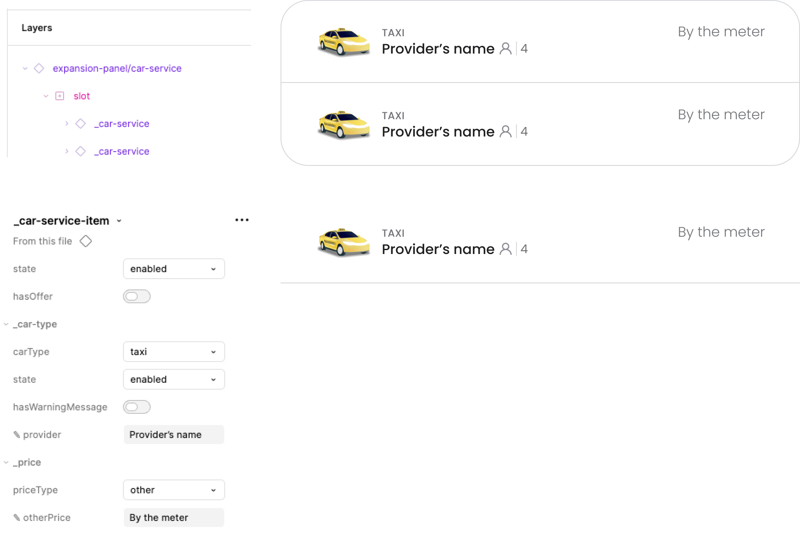
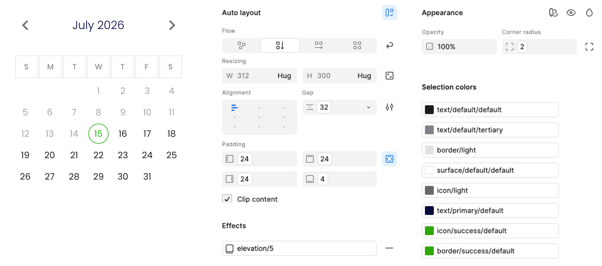
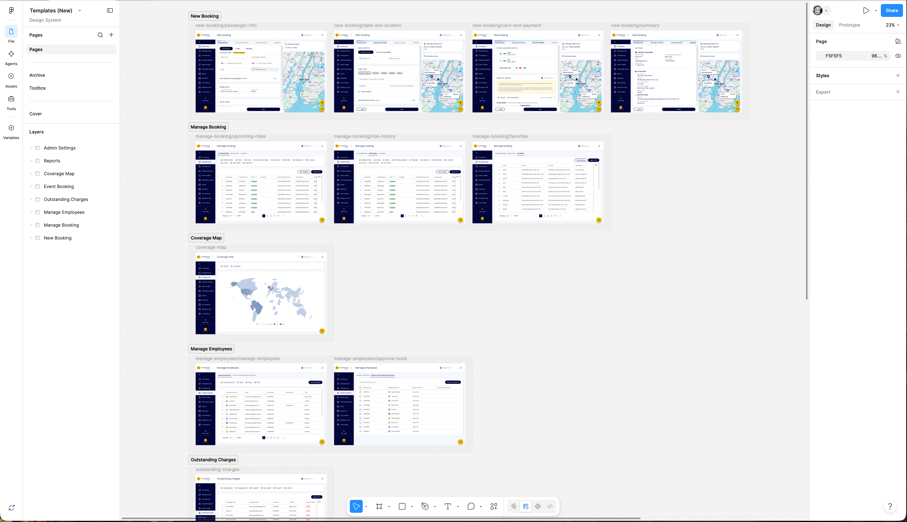
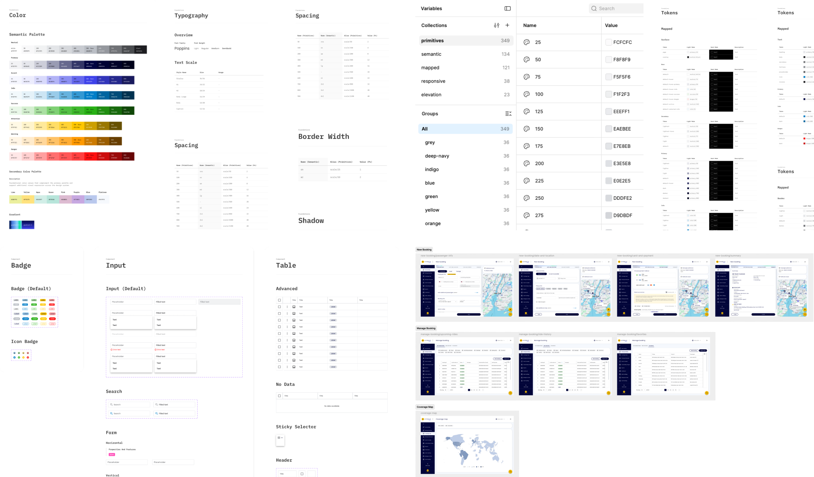

HQ Design System
Building a scalable design system for an existing corporate mobility platform
About Project
HQ’s existing design system was incomplete and outdated, creating the need for a more consistent and maintainable foundation.
I was responsible for building a new Figma component library and organizing the design foundations, including colors, typography, effects, and design tokens.

The Challenge
My task was to establish a more structured and maintainable design foundation while working within the constraints of an existing product.
Rather than designing a system from scratch for a new interface, I needed to organize and standardize existing patterns, identify missing components, and create a library that could support both the current product and future improvements.
Foundations & Design Tokens
I organized HQ’s visual foundations, including colors, typography, shadows, spacing, and border radius, into a structured system of reusable styles and consistent values.
I established naming conventions and organized design tokens into logical layers, separating foundational values from their intended usage. This structure improves maintainability, ensures consistency across components, and simplifies system-wide visual updates.


The new token system currently supports the light theme only. HQ’s existing dark theme is scheduled for a redesign, so it isn’t included yet.
Component Library
The goal was to create a flexible system that supports HQ’s existing interface while making future design work faster, more consistent, and easier to maintain.
Component Structure & Properties
I used Figma’s component properties and variants to simplify configuration, reduce duplication, and avoid detaching instances.

Consistency & Maintainability
I connected reusable components to shared styles and design tokens, so changes to colors, typography, spacing, and other properties are managed centrally and reflected across all instances.

Starter Pages & Practical Application
Beyond the original project requirements, I created a separate Figma file containing starter examples of HQ’s main product pages, built entirely using components from the new library.
These pages demonstrate how individual components work together in real product layouts while providing a reusable starting point for future designs, reducing repetitive work and ensuring consistency through established patterns.

Outcome
The project delivered a structured design system for HQ, including reusable Figma components, organized visual foundations, design tokens, and starter pages, with the library already in use by HQ’s product designer to improve consistency and reduce repetitive work.
